3.7.1 Basic uses
In a bank transaction table and the like, one account often has many transaction records. All transaction records contain time, date or datetime data like transaction times and dates, and usually queries need to be handled according to them. In these cases, a time key is useful.
Suppose we have a bank transaction table stored in transaction.btx:
|
|
A |
B |
C |
|
1 |
=create(UID, Amount, Time) |
2021-01-01 |
=5.(12000+rand(9)*1000) |
|
2 |
for 12 |
=date(2021, A2, 5) |
|
|
3 |
|
for C1 |
=datetime(B2, time(9+rand(9), rand(60), rand(60))) |
|
4 |
|
|
>A1.insert(0, #B3, B3, C3) |
|
5 |
for rand(200)+100 |
=B1+rand(365) |
=time(8+rand(15), rand(60), rand(60)) |
|
6 |
|
=-(rand(200)+1)*10 |
=datetime(B5, C5) |
|
7 |
|
>A1.insert(0, int(rand(5)+1), B6, C6) |
|
|
8 |
=A1.sort(Time).group(UID) |
|
|
|
9 |
=create(UID, Time, Change, Amount) |
=5.(10000+rand(200)*100) |
>B9.run(A9.insert(0, B9.#, datetime(B1), 0, B9.~)) |
|
10 |
for A8 |
for A10 |
>B9(#A10)=B9(#A10)+B10.Amount |
|
11 |
|
|
>A9.insert(0, #A10, B10.Time, B10.Amount, B9(#A10)) |
|
12 |
=A9.sort(Time) |
transaction.btx |
=file(B12) |
|
13 |
>C12.export@b(A12) |
=C12.import@b() |
|
A1 creates a table of deposits and withdraws that consist of UID, Amount and Time. C1 generates a table of five employees¡¯ salaries per month randomly, as shown below:
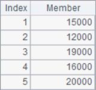
Lines 2~4 generate salary transfer records in every fifth date each month, during which C3 generates transfer time randomly, and C4 inserts account, amount and time of each sum of salary transferred to A1¡¯s table sequence. Below is A1¡¯s table sequence:
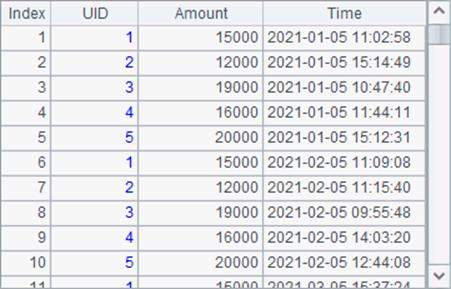
Lines 5~7 generate consumption records in the year 2021, during which B6 generates consumption amounts randomly, C6 generates purchase time randomly, and B7 inserts account, amount and time of each sum of consumption to A1¡¯s table sequence, with user IDs generated randomly. Below is A1¡¯s table sequence after this insertion:
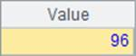
A8 sorts A1 by time and groups it by user ID in order to generate transaction records. Below is A8¡¯s result:
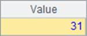
A9 generates a bank transaction table. C9 inserts balance of each account at the beginning of the year 2021 and gets the following result:
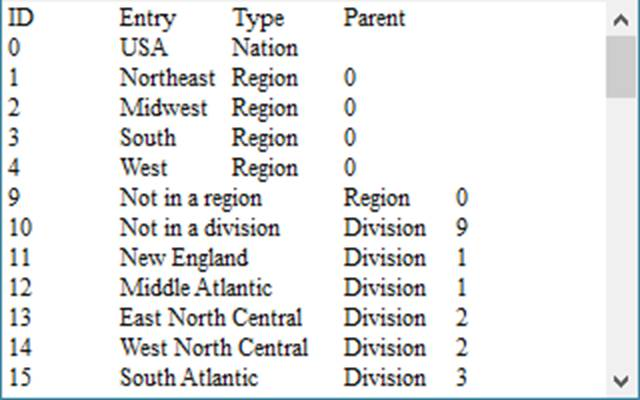
The transaction data table has four fields – UID (user ID), Time (transaction date and time), Change (change of balance), and Amount (balance). Lines 10~11 generate transaction records based on every user¡¯s all deposit and withdraw records, during which C10 updates account balances in B10¡¯s records, and C11 inserts new transaction records to A9¡¯s bank transaction table.
A12 sorts A9¡¯s table by time to get the desired bank transaction table. A13 exports records in the table to transaction.btx. B13 imports records from the bin file as follows:
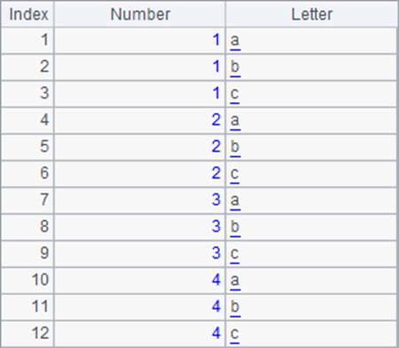
To use the time key, we need to first define one using T.keys@t(K1,K2, ..., KT). With @t option, the last of the specified field parameters is the time key. One table sequence can only have one time key, and all the other keys are called basic keys. For example:
|
|
A |
B |
|
1 |
=file("transaction.btx") |
|
|
2 |
=A1.import@b() |
>A2.keys@t(UID, Time) |
|
3 |
=A2.find(3, date(2021,5,1)) |
=A2.pfind(3, date(2021,5,1)) |
|
4 |
=A2.find(3, datetime(2021,8,5,18,0,0)) |
=A2.pfind(3, datetime(2021,8,5,18,0,0)) |
|
5 |
=A2.find(3) |
=A2.pfind(3) |
B2 sets UID as the basic key and Time as the time key for table sequence A2. Below is A2¡¯s table after their configurations:
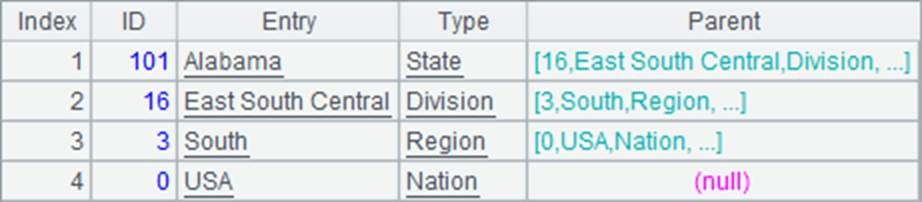
You can see that both UID field and Time field are highlighted by a primary key mark.
A3 searches for records using T.find(k) function and gets the following result:
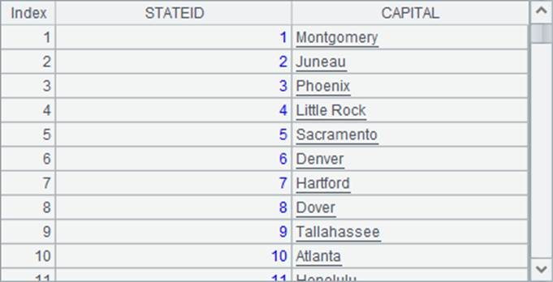
Make a note that the time-key-based search with T.find() function isn¡¯t performed according to the ¡°equivalence¡± of key values, as a basic-key-based search uses, but according to the condition that ¡°the latest time before a specified time point¡± instead. In A3, expression A2.find(3, date(2021,5,1)) searches for the last transaction record before 2020-05-01 for the user whose ID is 3.
We can also get the sequence number of the desired record using T.pfind(k) function. B3, for instance, gets the sequence number of the above record:
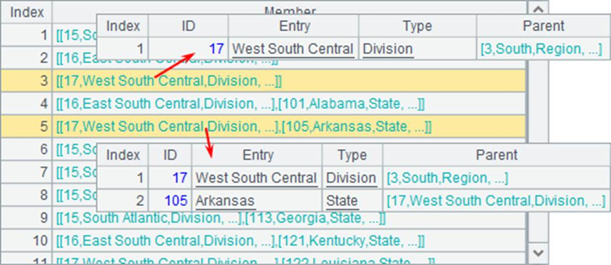
We can also use a datetime value in a time-key-based query, like A4 and B4 do. Here are their results:
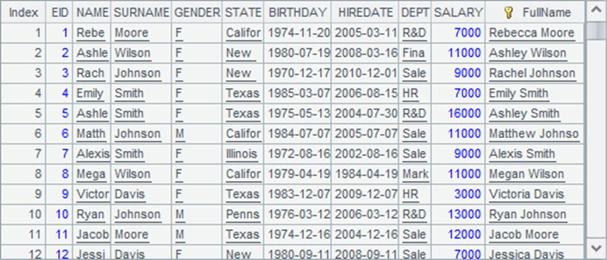 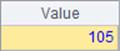
If a table sequence has a time key but the value of time key isn¡¯t specified when we use T.find() function or T.pfind() function to perform a primary-key-based query, the value of time key query parameter will be the current time. In A5, =A2.find(3) is equivalent to =A2.find(3, now()). Since a table sequence having a time key usually stores historical data that happens before the current time, a query where the time key value isn¡¯t specified means to find the record with the latest time among records matching the basic key values. Below are results of A5 and B5:


T.keys@t(Ki, ..., KT) is the only method that can define time key for a table sequence, while a basic key can be defined through the hash # in create(C1, C2, ¡) function.